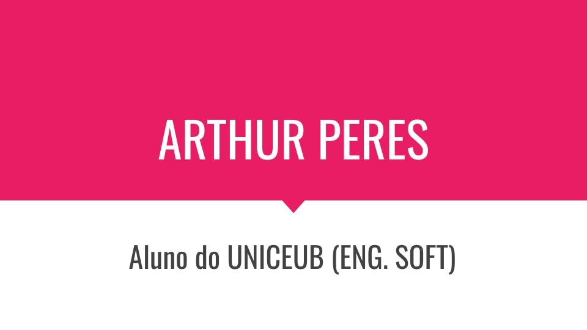
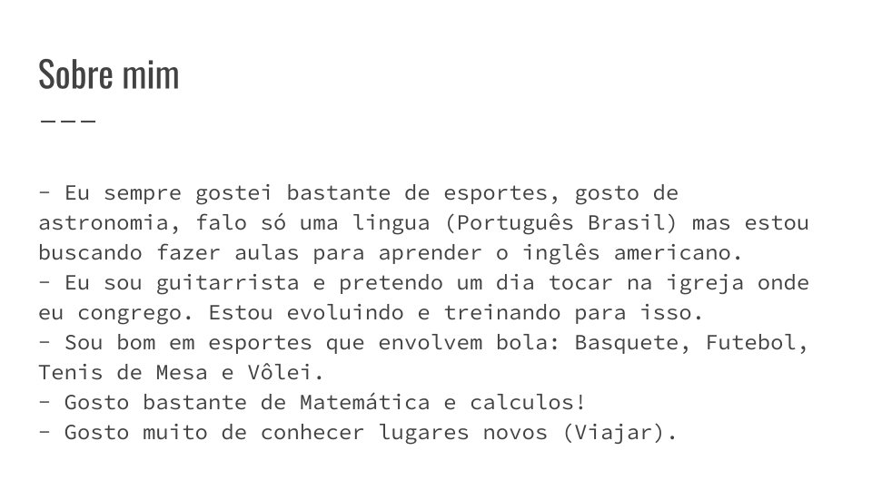
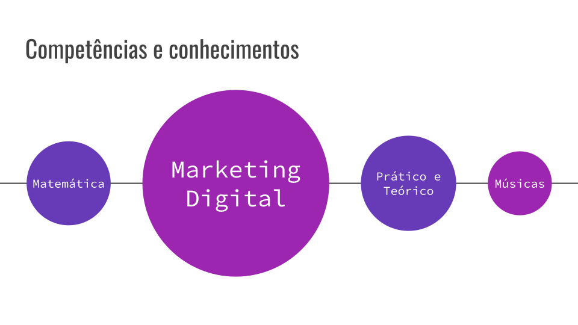
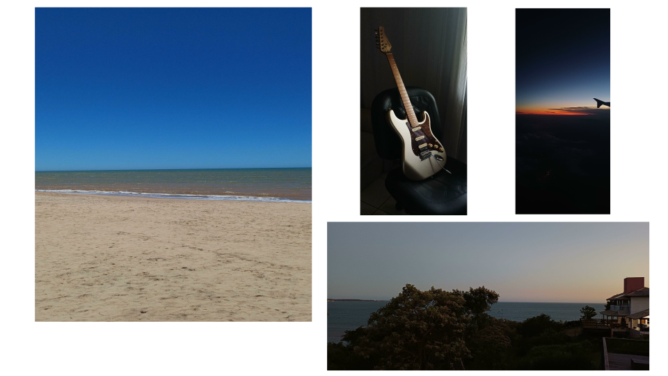
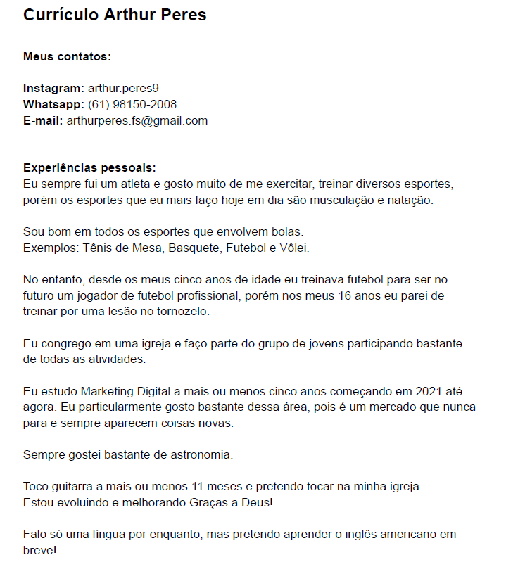
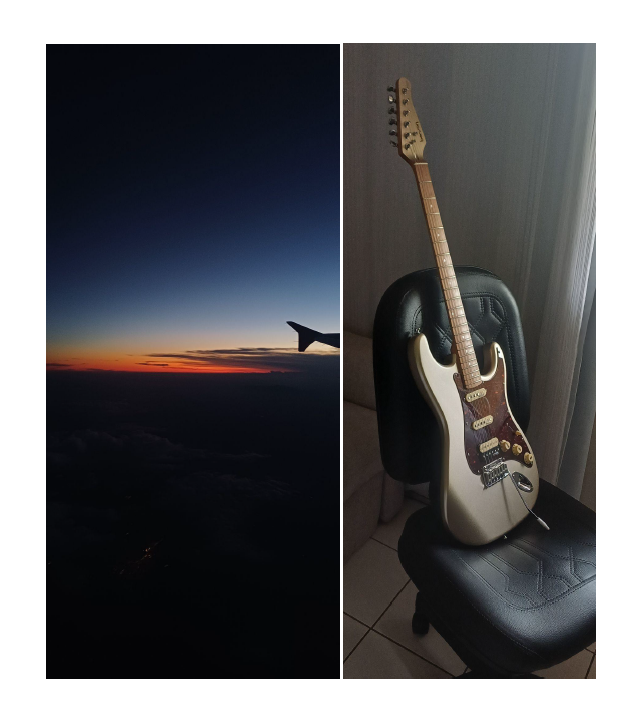

Sobre mim
Atualmente curso Engenharia de Software e venho desenvolvendo projetos para aplicar na prática conceitos de desenvolvimento, estruturação de dados, banco de dados, lógica de programação e automação de processos.
Também estudo a plataforma ServiceNow, utilizando recursos como App Engine Studio e Flow Designer para criação e configuração de aplicações.
Projetos em destaque
🐾 AU FOOD
Aplicação desenvolvida no ServiceNow App Engine Studio para gerenciamento de produtos, estoque e pedidos. O projeto inclui relacionamento entre tabelas, controle de acesso, importação de dados e automação do processo de aprovação de pedidos.
Ver projeto🔐 Escape Room C++
Projeto acadêmico desenvolvido em C++ com desafios de lógica baseados em uma experiência de sala de fuga, criado durante os estudos de lógica de programação.
Ver projeto🌐 Portfólio Web
Site desenvolvido em HTML e CSS para reunir projetos, conhecimentos e experiências acadêmicas em um único ambiente online.
Ver códigoTecnologias e conhecimentos
Portfólio
Algumas imagens relacionadas aos meus projetos, atividades acadêmicas e desenvolvimento profissional.




Currículo


Contato
Você pode conhecer mais sobre meus projetos e acompanhar meu desenvolvimento profissional pelos links abaixo.
GitHub